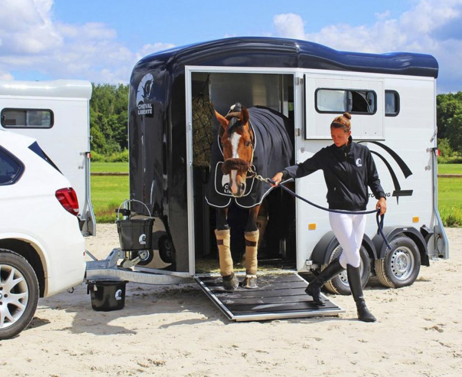

Nuestro equipo de expertos en transporte equino cuenta con años de experiencia en la industria, proporcionando servicios especializados que incluyen el transporte seguro de caballos a nivel nacional e internacional. Trabajamos con vehículos adaptados y equipados con sistemas de seguridad avanzados para asegurar el confort y bienestar de los animales en todo momento. Además, contamos con protocolos rigurosos para el manejo de caballos con necesidades especiales, garantizando que su traslado sea lo más cómodo posible.
También ofrecemos servicios adicionales como el cuidado durante el transporte, la monitorización constante de los animales y la preparación para eventos y competencias. Sabemos lo importante que es el bienestar de los caballos, por lo que cada uno de nuestros procesos está diseñado para que el caballo viaje de la forma más tranquila y segura posible. Además, nuestro equipo está altamente capacitado para gestionar cualquier situación que pueda surgir durante el transporte, brindando siempre soluciones inmediatas y eficaces.
En cuanto a la gestión de caballos, no solo nos centramos en su transporte, sino también en su bienestar general. Ofrecemos asesoría sobre el cuidado de los caballos, su alimentación, descanso y otras necesidades especiales. Si necesitas un servicio integral que cuide de tu caballo antes, durante y después del transporte, estamos aquí para ayudarte. Nos aseguramos de que cada uno de nuestros clientes y sus caballos reciba el trato que merece.